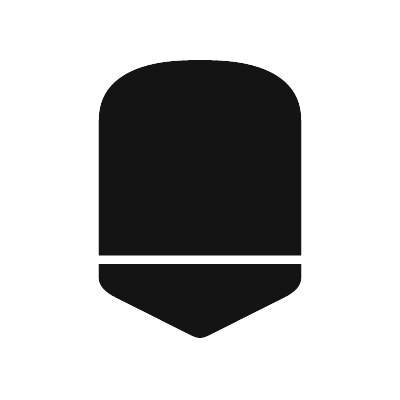
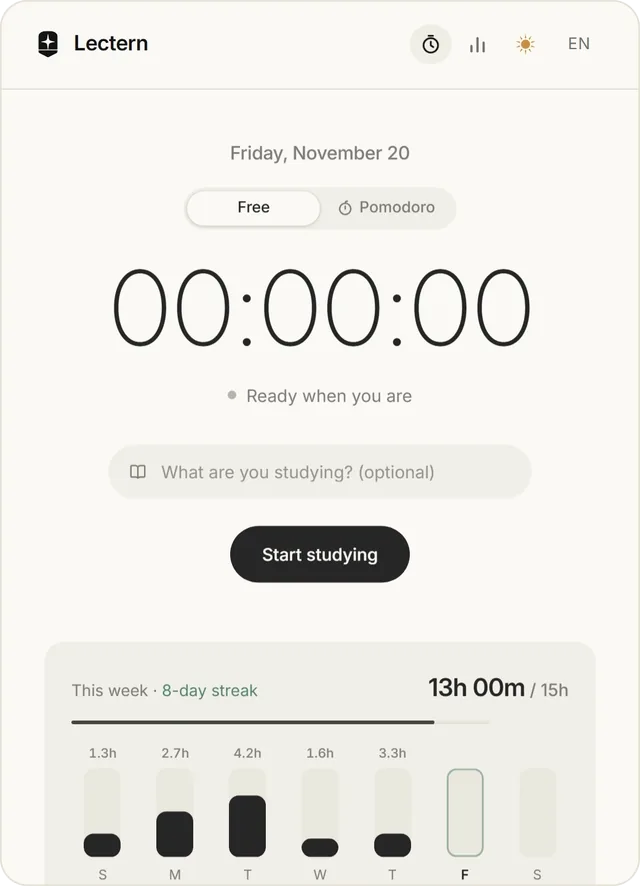
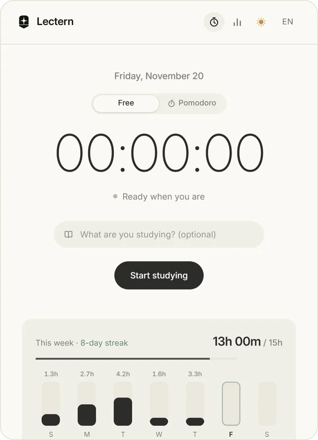
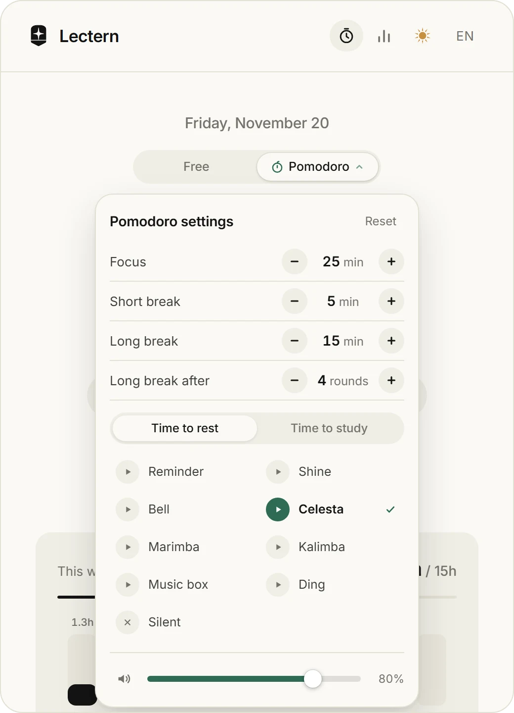
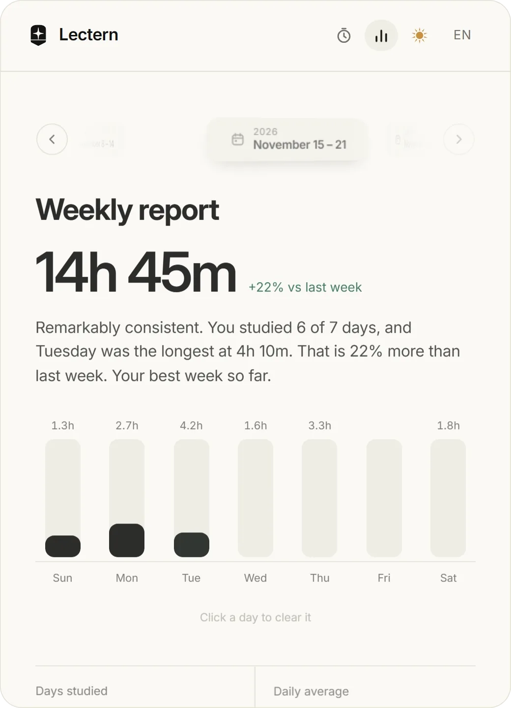
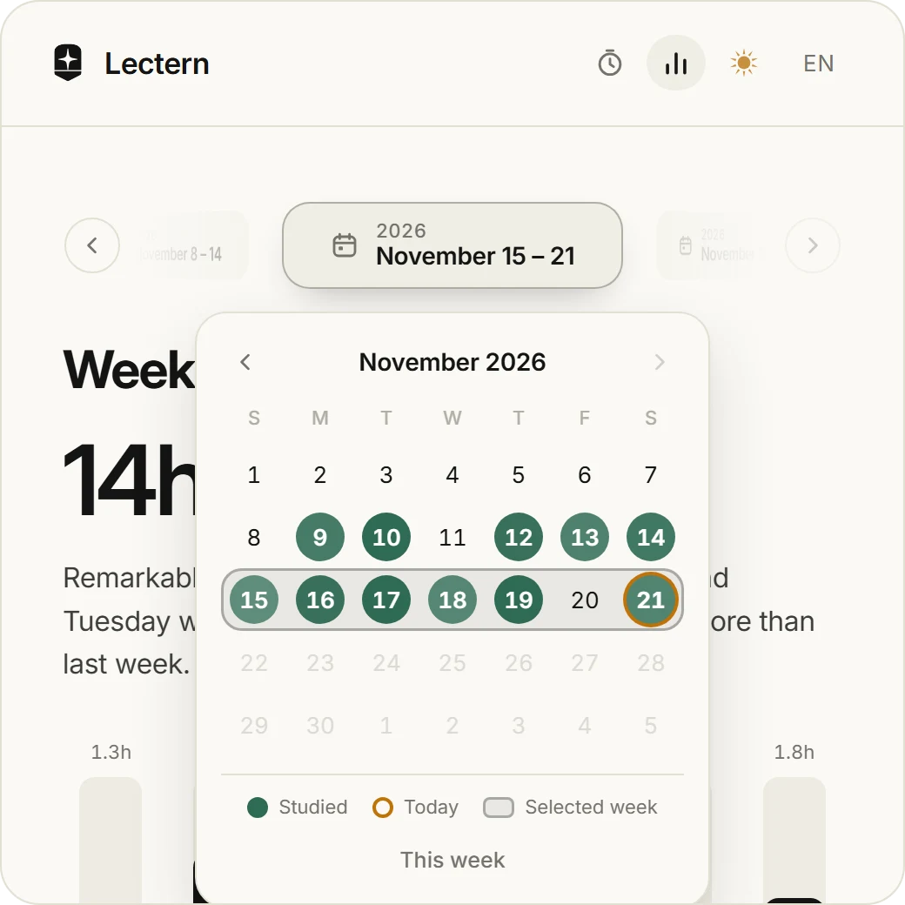
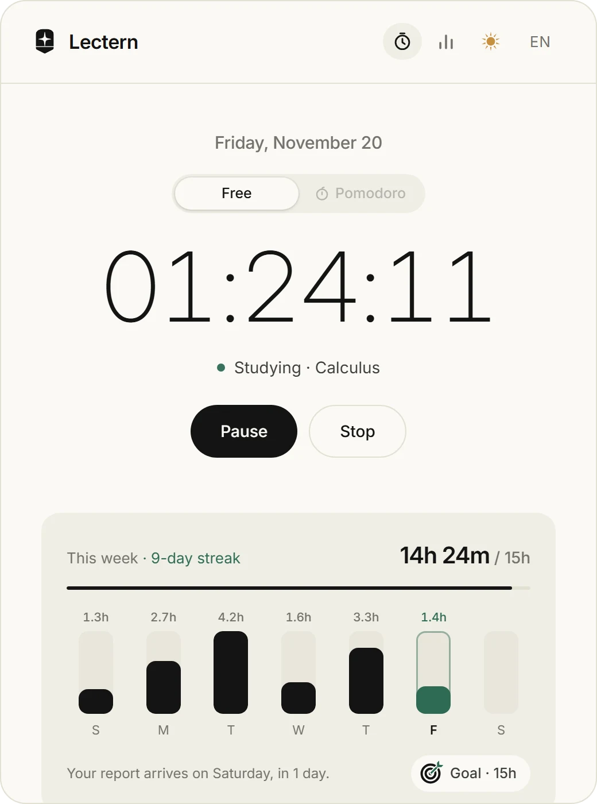
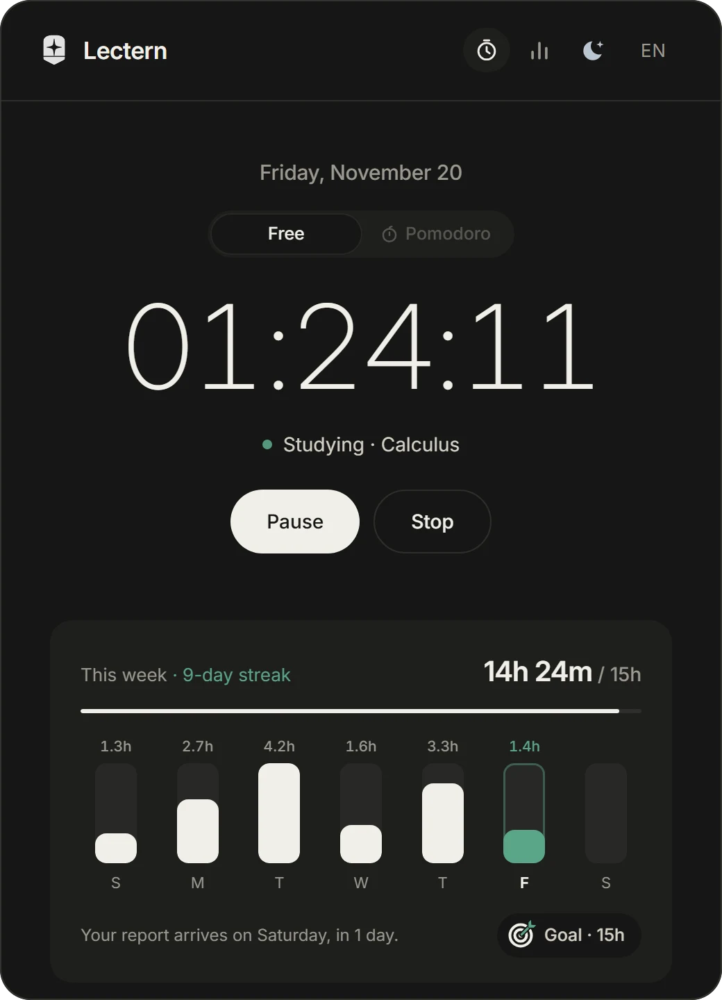
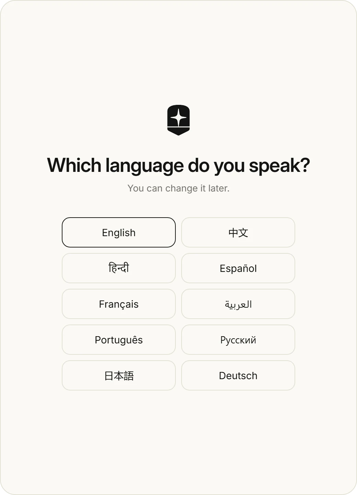

Press start.
Read your week on Saturday.
Lectern is a small study timer for Windows. It keeps the time, notices the breaks, and writes you an honest report of the week, all on its own.

Why it exists
Most study apps ask for a plan. Lectern asks for one click.
No projects to set up, no tags, no logging at the end of the day. You sit down and press start. When you stand up, you press pause. Lectern does the arithmetic, and every Saturday it tells you, in plain words, how the week really went.
- Honest about breaks. Paused time is tracked but never counted as study, so the report shows how much of your sitting time was real focus.
- It never loses a minute. Time is stored as timestamps, not a counter. Close the window or restart your PC and the clock is still right.
- Out of the way. Closing the window sends Lectern to the system tray, where it uses about 27 MB.
- Yours. No account and no tracking. Your history is one file on your own computer.
Every day
Three buttons, and a week that fills in.
| Start | You are studying. The clock runs. |
| Pause | You are on a break. It is tracked, never counted as study. |
| Stop | You are done for the day. It asks twice, so it never happens by accident. |
Type what you are studying before you start, or leave it blank. Lectern remembers your subjects and suggests them next time, with the hours you have already put in.
- Weekly goal. Set your hours once. A thin line fills as you go and turns green when you get there.
- Streak. After two days in a row, Lectern starts counting. It is safe until the day ends.
- Past midnight. Studying from 22:00 to 03:00 counts 2 hours on the first day and 3 on the next.
Pomodoro, if you like it
The classic rhythm, tuned to yours.
Switch the timer from Free to Pomodoro and it counts down instead: 25 minutes of focus, 5 of rest, and 15 after every fourth round. Click Pomodoro again to change any of it.


A soft chime tells you when to rest, and another when to get back to it. Pick each from eight clean sounds, or none, and set the volume to the exact percent. Focus counts as study and rest as break time, so the report reads the same either way.
Every Saturday
A report that writes itself.
The first time you open Lectern on a Saturday, the report opens by itself. Miss Saturday and it waits for you. Click the dates to open a calendar and jump to any week.


- Total hours, and how they compare with the week before
- A day-by-day chart with your best day highlighted
- Days studied, daily average and focus ratio
- Time per subject, and progress toward your goal
- A short written summary that tells you when it is your best week yet
Started the timer by mistake? Click that day in the chart and clear it. Undo is there for a few seconds.
Light and dark
Calm in either light.
Ivory by day, warm charcoal by night. Lectern follows Windows, or you can switch it with the sun and moon in the corner.


Ten languages
It asks which language you speak.
The first time it opens, Lectern asks once, and you can change it later.

Questions
Small answers.
What happens when I close the window?
Lectern keeps running in the system tray, near the clock. Click the icon to bring it back, or right-click it and choose Quit. The timer keeps counting either way, and Pomodoro chimes still play.
When does a week start?
Sunday. The report on Saturday covers Sunday through Saturday.
Where is my data?
In one JSON file at %APPDATA%\app.lectern.studytimer\lectern.json. Copy it to back up your history or move it to another computer.
How do updates work?
When Lectern opens, it asks GitHub whether a newer release exists. If one does, a single line offers it. Update shows a small window that downloads the new version, checks it against the SHA-256 digest GitHub publishes, swaps it in and reopens Lectern. No installer to run.
Does it need the internet?
No. Checking for updates is the only time Lectern goes online, and it sends nothing about you or your studying.
How do I uninstall it?
From Windows Settings, under Apps. Lectern asks whether to keep your study history, so a reinstall picks up where you left off.
Under the hood
Small on purpose.
Lectern is built with Tauri and plain HTML, CSS and JavaScript, with no framework. The installer is its own small app in the same style, and it installs per user, so it never asks for administrator rights.
git clone https://github.com/mthsluna/lectern.git cd lectern npm install npm run dev # run it npm run build # dist/Lectern-Setup-<version>.exe